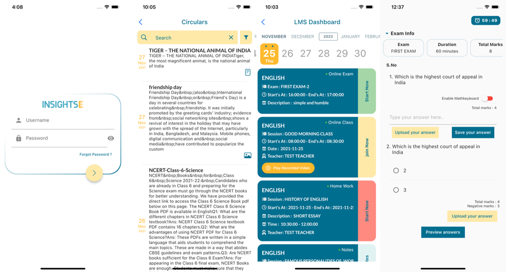
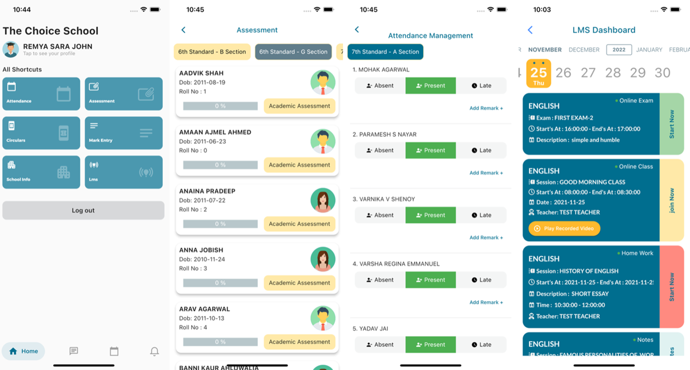
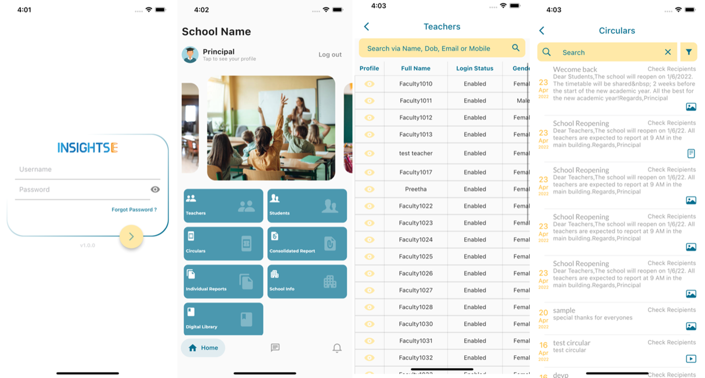
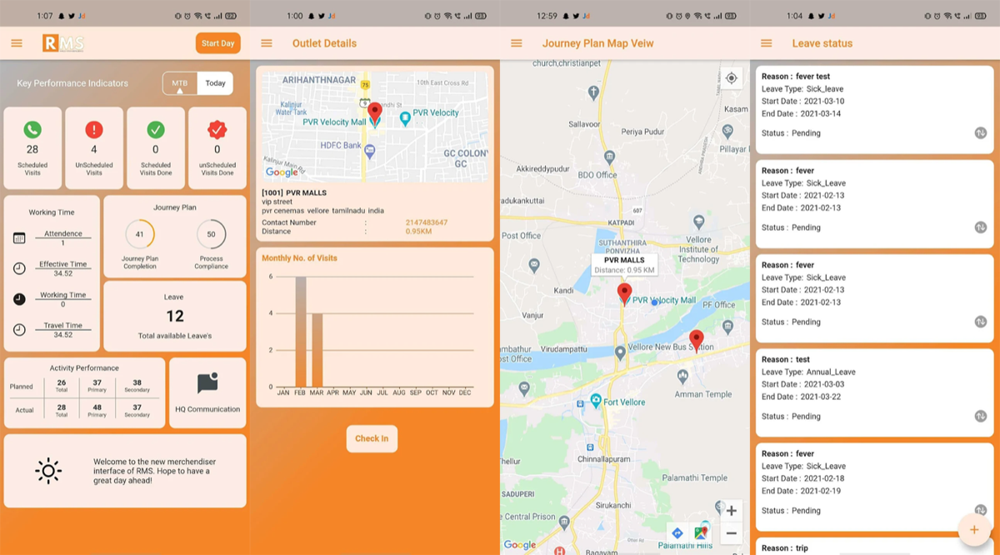
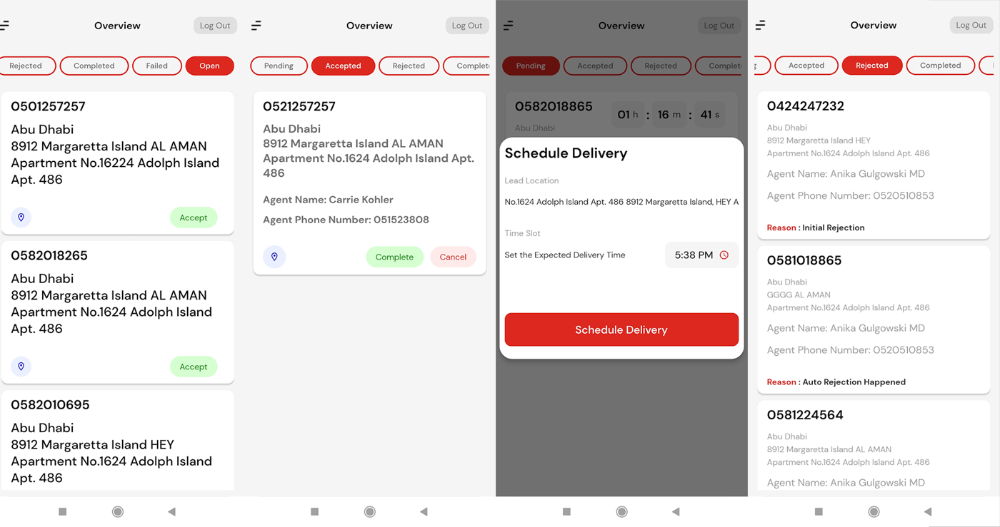

Nearly 6
Years of experience
Since December 2020
Frontend UI Engineering Lead | Senior Flutter Developer
Building Scalable Digital Experiences Across Platforms.
Nearly six years shipping production Flutter apps across mobile, desktop, and web—leading frontend delivery while staying hands-on in architecture and code.
Years of experience
Since December 2020
Monthly active users
Across the InsightsE ecosystem
Integrated Flutter apps
Parents/students, teachers, management
Buses tracked
GPS-equipped school transport
Desktop POS delivery
Independent Canteen build
Flutter developers led
Hands-on technical leadership
Android & iOS pipelines
Built in GitLab from scratch
Shared Flutter architecture
Flavors, branding, feature config
I began my professional Flutter career in December 2020 at The Thought Factory DMCC, where I built cross-platform applications from scratch. That role grounded me in Flutter, Dart, REST APIs, mobile device integrations, and shipping production software.
In August 2021 I joined Rubrix Analytics as a junior Flutter developer. Over the following years my scope grew from implementing screens to owning application architecture, reusable components, UI consistency, code quality, production delivery, team coordination, and technical decisions. I progressed into a Frontend UI Engineering Lead role while staying deeply involved in implementation.
Independently, I developed three integrated Flutter applications for parents/students, teachers, and management—collectively supporting more than 60,000 monthly active users. From there I expanded into Flutter desktop engineering, hardware integrations, CI/CD pipelines, white-label application architecture, and production web frontend modernization with HTML, CSS, and JavaScript.
Today I lead two Flutter developers while remaining active in architecture, debugging, code reviews, and releases. I care about maintainable UI systems, clear ownership, and reliable delivery—not titles for their own sake.
B.Tech — Electronics and Communication Engineering
Pragati Engineering College, Surampalem, Andhra Pradesh · 2016–2020 · CGPA 7.3
Expand each role for responsibilities, achievements, and technologies.
Joined as a junior Flutter developer and progressed into frontend UI engineering leadership, owning architecture, UI quality, technical decisions, and delivery across mobile, desktop, and web.
Built two Flutter applications from scratch—Rhapsody Merchandising and Halo CRM—covering field reporting, CRM workflows, REST APIs, and device integrations.
Scan the portfolio here; open dedicated case studies for deeper engineering detail.
Three integrated Flutter applications—parents/students, teachers, and management—built from scratch and later led as frontend owner. Combined ecosystem reach: 60,000+ monthly active users.



The apps share product language, workflows, and backend collaboration patterns so schools operate as one ecosystem rather than three disconnected clients.
A production Flutter desktop point-of-sale I designed and shipped end-to-end in one month for school canteen operations.
Live location for approximately 100 GPS-equipped buses: REST for the initial load, Cloud Firestore snapshot listeners for updates, and Google Maps for visualization—with stale-location handling and lifecycle-aware listener cleanup.
A shared Flutter codebase that ships organization-specific builds through flavors, identifiers, branding, and feature configuration.
Flutter application built from scratch for field merchandisers.

Flutter CRM built from scratch for Android and iOS.

Product screenshots from InsightsE, Rhapsody Merchandising, and Halo CRM. Select an image to enlarge.
Dedicated pages for interview-level detail—architecture, constraints, and verified implementation choices.
One-month independent delivery: NFC/RFID, thermal printing, offline queue, ERPNext APIs.
Read case study →REST bootstrap, Firestore listeners, Maps, stale detection, lifecycle cleanup.
Read case study →Shared Flutter codebase with flavors, branding, and feature configuration.
Read case study →Android & iOS pipelines from scratch; tag-triggered builds; manual store publishing.
Read case study →REST for initial locations; Cloud Firestore snapshot listeners for live updates; Google Maps for visualization; stale-location detection; lifecycle-aware listener cleanup and reconnection. Listener scope matters—without it, apps leak work and show stale UI after backgrounding.
When connectivity drops, transactions continue through an offline queue, then sync when the network returns. Unique identifiers and backend acknowledgments help prevent duplicate posts during recovery.
Shared codebase + Flutter flavors/build variants + branding and feature configuration keep multi-organization delivery maintainable.
BLoC/Cubit state management, separation of concerns, reusable widgets, consistent UI patterns, modular delivery, and structured code review keep large Flutter codebases maintainable as teams grow.
Patterns I apply across production Flutter systems for clarity, reuse, and reliable delivery.
I separate UI from business logic, standardize state management with BLoC/Cubit, apply Clean Architecture and MVVM concepts where they clarify ownership, and keep reusable UI patterns consistent across modules. API integration, real-time data handling, error surfaces, and lifecycle awareness are treated as first-class concerns—not afterthoughts.
Release automation I built from scratch for Flutter mobile delivery.
Tag-triggered pipelines install dependencies, produce Android APK/AAB and iOS IPA artifacts, and run signing/provisioning workflows. Play Store and App Store uploads are completed as a separate release step after artifacts are ready.
Canteen desktop POS identification and payment-related workflows.
Receipt generation for Canteen POS transactions.
School bus tracking and field merchandising geolocation.
Live bus location visualization.
Rhapsody store capture and offline-capable sync.
Push notifications and production Flutter targets across mobile and desktop.
I lead two Flutter developers through sprint planning, task allocation, mentoring, architecture discussions, UI quality standards, reusable component practices, code reviews, and merge approvals. Both developers deliver modules independently under my technical review.
I continue to own frontend architecture decisions, debugging, and production releases, working closely with backend engineers and stakeholders.
Core production experience is distinct from additional familiarity.
A repeatable path from requirements to release, with unit testing applied where it adds the most confidence.
Kakinada, Andhra Pradesh, India · Open to relocation